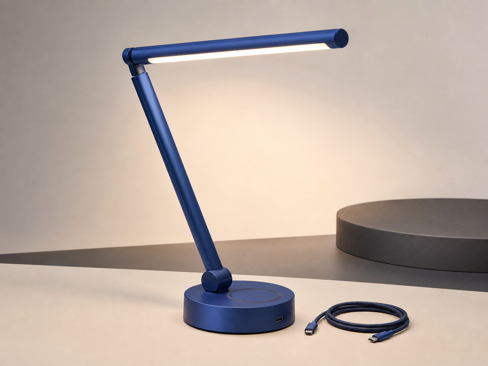
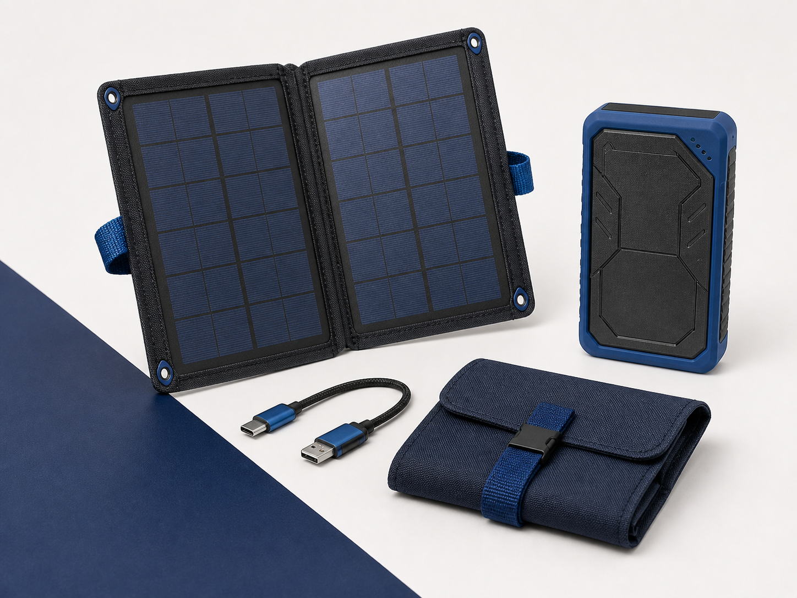

桌面照明
给专注留一点光
YNX COMMERCE
购物、商品管理与商家账单，在一个生态里连接。选择你的角色，开始自己的 Commerce 旅程。
自由浏览介绍，无需登录或连接钱包。
发现你的下一件好物

给专注留一点光

探索更多可能
CONNECTED COMMERCE
从商品发现到订单跟进，保留每一步的记录。
查看商品图片、规格、库存与店铺政策。在结算前确认收货信息和订单明细。
管理商品草稿、规格和库存，处理订单、退货及店铺成员，让运营有条理。
创建商家账单、查看支付记录。付款在 Wallet 中由你确认，订单状态依据支付凭据更新。
YOUR SPACE
进入商城，浏览商品与店铺。私人订单需要本人登录。
打开商城 →进入卖家工作台，管理自己的商品、库存与订单。需有效店铺权限。
打开卖家工作台 →进入商家后台，查看本人授权范围内的账单和支付记录。
打开商家后台 →目前为 YNX Testnet，使用测试币 YNXT。部分商家入口与私人服务仍在接入中；进入应用后以实际可用状态为准。
不需要。此页不会请求登录、签名、账户或设备权限。打开应用后，你可以自己选择是否连接 Wallet。
查看原订单和账单，在 Wallet 中明确确认。页面显示或钱包连接不代表付款完成；请查看订单里的支付记录。
商城的个人资料页面提供数据导出和删除。仍在处理的订单需先完成其流程；公开链上的支付凭据仍可验证。店铺与商家后台只展示本人获授权的记录。
部分服务仍在接入中。保留原订单或账单编号，使用原应用的记录与恢复入口查看状态，不要因页面超时重复创建付款。